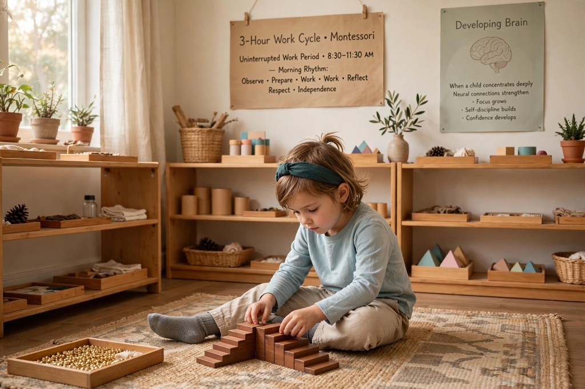

Early Learning
By Clara Vance, M.Ed.
•
5 min read
The 3-Hour Work Cycle: Why Uninterrupted Focus Transforms Children
Discover why avoiding arbitrary adult bells and letting children immerse in self-chosen activities creates authentic normalization and joy.